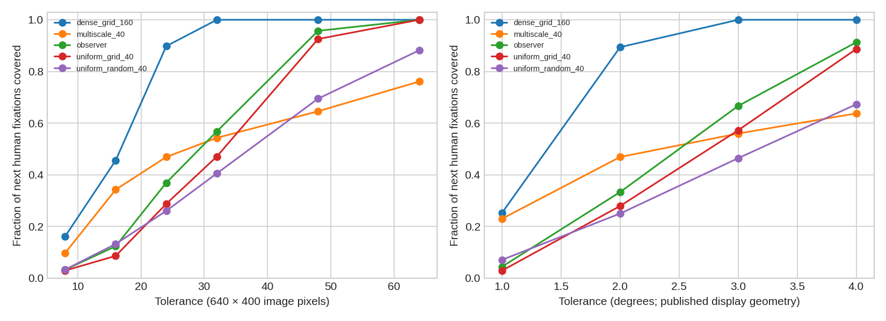
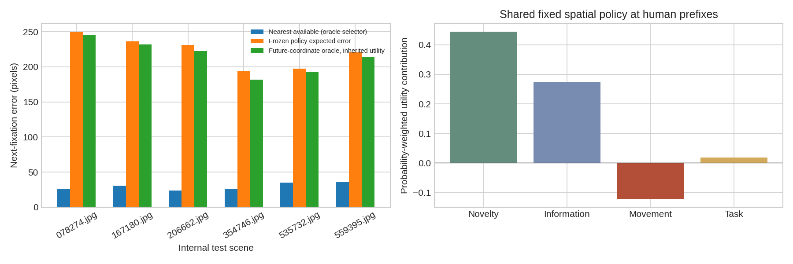
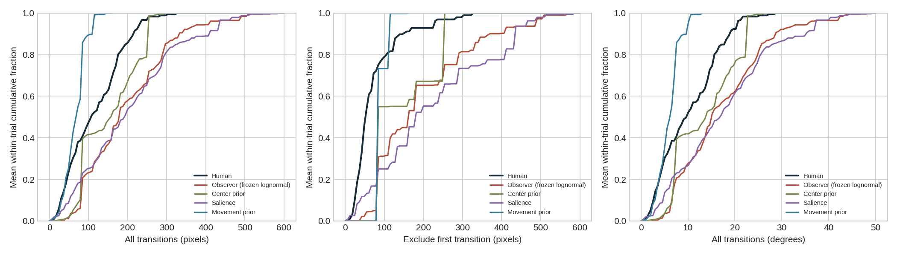
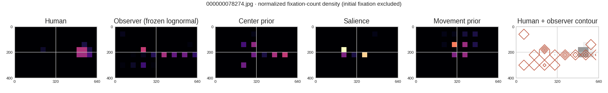

RGB ACTIVE OBSERVER / PHASE 4A / DIAGNOSTICS ONLY
Could the observer have looked where the human looked?
Usually within a broad 48-pixel neighborhood, rarely at fine precision—and it assigns little probability to the relevant location. The main coarse-scale limitation is selection and task guidance, with a separate fine-scale candidate-resolution limitation.
On the six internal test scenes: candidate coverage at 48 px is 95.7%, at 16 px 12.3%. The nearest candidate ranks 20.4 and receives 3.5% probability. Mean nearest-location error is 29.4 px, versus 221.3 px under the frozen policy. These are conditional, observed-prefix diagnostics—not autonomous prediction scores.
No attention, perception, timing or candidate-generation mechanism was added to normal inference. No test-set optimization occurred. The primary autonomous model is the frozen Phase 3 lognormal comparator, chosen to trace the reported amplitude discrepancy; the archived Phase 2 implementation remains the default. Existing center, salience and movement-prior policies serve as diagnostic baselines, all with the same frozen timing profile and three seeds.
1. Evaluation and coordinate audit
The original coordinate frame is 1680 × 1050 display pixels. The mirror’s aspect-preserving black padding is reproduced before resizing to 640 × 400. Human x and y are both multiplied by 640/1680 = 400/1050. There is no crop. The adapter was reconstructed from the original fixation JSON using image + subject + task as the unique trial key.
Across 259 trials on 24 scenes, maximum adapter discrepancy is 1.1e-13; maximum coordinate round-trip error is 2.3e-13 original pixels. No fixation location was removed by the current RT truncation. Thus the amplitude gap is not explained by a scale-factor error in this adapter. Official display images were not locally available for pixelwise comparison, so the mirror-to-official stimulus match remains unverified.
The authors’ published supplement documents a 22-inch display at 47 cm, subtending approximately 54° × 35°. This report derives flat-display bearing rays from those angles and compares their angular separation. Rounded setup angles limit precision; this is not individual calibration. The protocol accepted calibration errors up to 0.51° on average and 0.94° maximum, so the smallest spatial tolerances must also be interpreted against measurement uncertainty. The mirror’s 16 px/degree pertains to COCO-Periph synthesis, and the model’s 60° pseudo-camera is a visualization assumption; neither is human display calibration. The model itself was not recalibrated.
The supplied initial fixation is excluded from fixation-density/count metrics. It is a nominal initial event, not a forced exact-center point: in this test subset its median distance from center is 28.5 px and maximum 114.2 px. Both model and human begin at that same recorded location. The published start-dot procedure alone cannot explain every offset; event-level provenance/calibration needs the raw recording, so the first-event convention remains an explicit assumption. Amplitude is reported both from all consecutive fixation transitions and after excluding the first transition. “Saccade amplitude” here means displacement between reported fixation centroids; the local file has no continuous samples from which to re-detect physiological saccades. Simulation stay segments are merged; subsequent same-location censor flags follow the final segment. Revisit means returning within 4% of image width after at least one intervening fixation, excluding an immediate neighboring fixation.
Timing remains a material evaluation limitation: raw ΣT exceeds RT in 162/259 trials and is below RT in 97. The legacy adapter clips cumulative fixation durations at RT, changing 162 terminal intervals but removing no locations. Without onset timestamps and saccade gaps, exact wall-clock alignment cannot be reconstructed. RT-conditioned autonomous windows are retained for comparability; a lower-window sensitivity truncates model predictions at min(RT, Σ clipped human T), and an ordinal first-three-movement DTW removes reliance on exact onset timing. Neither is presented as a corrected ground-truth event stream. The frozen lognormal comparator starts with a 150 ms observation, versus a 230 ms mean recorded human initial event in this test subset; initial duration was not part of the complete-interior-fixation timing fit. This affects the available time for later movements and is another reason to retain window and ordinal sensitivities.
2. Candidate coverage
For each transition in all 259 eligible trials, the observer processes only the current and preceding human fixations. Its state is updated with those observed durations; unavailable human saccade gaps are not invented. Candidates and their probabilities are frozen before reading the next human coordinate. That next coordinate is used only as a scoring label. The 24 scenes retain their original internal train/validation/test labels. No fitting uses any split in this phase.
Uniform-grid and fixed multiscale baselines never use the next label. The multiscale set has 16 global centers plus current gaze and two fixed local rings, nominally 40 points; clipping can merge points near edges. Uniform-random 40-point coverage averages 32 predetermined random sets per prefix. The dense 160-point grid has a larger candidate budget and is explicitly not a fair equal-count architecture comparison.

48 pixels is the current model’s central radius, roughly four degrees near the display center; it is a broad tolerance. High coverage there does not mean that exact human endpoints are represented. At 1–2° or 8–16 px, quantization is a substantial limitation.
Observer coverage at 48 px, with image-bootstrap 95% interval: 0.957 [0.913, 0.994]. Nearest error (px): 29.439 [25.966, 33.157]. Full image- and participant-level tables are linked below.
3. Candidate generation versus selection
The nearest candidate is the evaluation-only best available endpoint. Its rank, utility and probability expose selection errors separately from the nearest-distance quantization floor. Rank uses greater utility as better; rank-min/rank-max in the CSV explicitly handle ties. Expected error sums each candidate’s distance from the next human point weighted by its frozen softmax probability. It is a one-step conditional loss, not the autonomous DTW score.
The policy’s expected error is 221.3 px, split exactly into 29.4 px unavoidable error under the existing set plus 191.8 px excess from selection. Greedy selection on the same utilities gives 160.7 px: sampling diffuseness contributes, but taking the utility maximum still misses the human endpoint substantially. This is a diagnostic counterfactual; no greedy policy was installed.
Evaluation-only oracle-candidate experiment. Add the actual next human coordinate to a copy of the frozen candidate set and assign it the nearest existing candidate’s utility. All existing weights remain unchanged. This removes the coverage floor but does not supply future object identity or a privileged score. The oracle never enters normal inference or an autonomous trajectory.
Mean conditional error changes from 221.3 to 214.6 px; the new perfect-location candidate receives only 3.2% probability. A perfect selector restricted to the existing candidates could instead reach the 29.4 px floor. Thus merely inserting better locations with the same weak priority would not solve the problem. The inherited-utility assumption is explicit; this does not prove that better visual representations would have no benefit.
Inspect test candidate diagnostics by image
Inspect test candidate diagnostics by participant

Unexplored grid regions receive 92.4% of probability. Their probability-weighted novelty and information contributions average +0.444 and +0.275, compared with movement cost −0.122 and task contribution +0.018. “Unexplored” is a model state, not evidence of physical emptiness. These observed magnitudes support investigating prioritization and movement calibration; they do not independently identify the optimal weights.
In these test trials, the first-choice target utility is always zero: central-only recognized labels cannot guide gaze toward a still-peripheral target. Context utility is also zero under the empty context-prior configuration. The next human fixation often lands on the annotated target, while the policy allocates only a small fraction of its probability there. The target string is supplied, but learned target-feature matching across peripheral candidate locations is absent. When the current human fixation is already inside the target box, the next human point stays inside it about 94% of the time, versus only 16.7% assigned probability from the model. This shows a prioritization/verification mismatch even after some target evidence becomes available; it is not explained solely by initial detection failure.
4. Autonomous spatial behavior
60 trials × three common seeds × four fixed existing policies = 720 runs on six previously examined internal test scenes. Seeds are averaged inside each trial; tasks inside image/participant; participants inside image; scenes equally. Bootstrap intervals resample scenes, never seed runs as if they were independent images. Only six scenes makes all intervals exploratory and unstable.

With the first transition included, the observer mean is 198.5 px versus human 115.7; excluding it gives 197.2 versus 73.1. The discrepancy therefore survives the convention change, although its ratio changes substantially. The lower-window sensitivity leaves the full observer amplitude at 198.6 px (all transitions), essentially unchanged from 198.5 px. These are image/observer means, not pooled saccades, and later-transition means omit trials with no later transition rather than assigning zeros.
Later-transition means above have different valid support when a model or human has only one transition. The following common-support sensitivity retains only paired runs where both have a later transition; it confirms the gap without assigning missing movements a zero.
In this correct-response test subset, humans fixate the annotated target on every trial; the observer does so in only 18.3% of matched-window runs. The center prior has higher NSS than the observer (0.154 vs 0.092) but lower target acquisition (6.7% vs 18.3%). The movement prior shortens jumps yet has negative NSS and reaches the target in only 2.8% of runs. These baselines expose dissociations; they do not establish a better observer. Center distance is normalized by image diagonal. Target-box metrics use the raw trial’s (x, y, width, height) target annotation, transformed identically to gaze. A point inside a target bounding box is a coarse target-selection proxy, not proof of recognition. The ordinal first-three-movement DTW includes the shared supplied starting point, unlike the post-initial full-sequence metric; the two DTW columns therefore have different conventions. Target acquisition, center bias, short movement size and density similarity must be assessed together; matching amplitude alone is insufficient.
Objects versus empty regions: complete ground-truth object masks are not available locally. The report therefore uses two explicit proxies: known search-object annotation boxes and a separate full-image SSDLite reference pass. This un-gated pass is evaluation-only and never supplied to the observer. Detector misses and box background mean that outside-reference locations are unclassified, not confirmed empty. True object/background allocation remains unresolved until complete COCO instance/stuff masks or OSIE contours are available.
Confirmed padding artifact
The fixed grid includes artificial black padding as if it were ordinary unexplored image space. It receives 13.8% of conditional probability; 15.9% of autonomous observer fixations land there, versus 0% for humans in this subset. Unlike outside-detector areas, these strips are known display padding rather than unknown scene content. This is a concrete preprocessing/candidate-validity problem, retained here for diagnosis rather than masked after inspecting the test results.
Per-image density diagnostics
Each image panel compares coarse normalized fixation-count densities, excludes initial fixation, and overlays human density with the observer’s contours. Shared color limits within a scene show concentration differences. Original photographs and individual trajectories are generated separately as local private overlays; they are not redistributed in this aggregate report.

Inspect autonomous results by image
Inspect autonomous results by participant
Paired baseline-minus-observer intervals
Image-bootstrap 95% intervals; higher NSS/target acquisition and lower DTW/W1 are favorable. Amplitude change itself has no intrinsically favorable sign. No multiplicity correction or population superiority claim.
5. The task is not free exploration
Free exploration asks what attracts or informs gaze without a specified target. Goal-directed search adds a target-specific priority and a decision to stop searching. The current model is mainly an uncertainty/novelty explorer with a target-label bonus after central recognition. It has no learned peripheral target-template matching, no populated context priors in the tested profile, and no predicted response decision in this comparison. Human RT supplies the exposure budget. It does not adequately implement the human search task, and failure on that task does not by itself establish how well it would explain free viewing.
These are recommendations for future validation, not datasets newly fitted or evaluated in Phase 4A. The current local subset covers only 24 scenes and a subset of target categories. An environment-learning or robotic observer will eventually need action-conditioned sensory streams and head/eye measurements beyond static screen-viewing datasets.
6. Ranked bottlenecks and what the evidence supports
- Confirmed: search-task representation is incomplete. No initial peripheral target-label utility, zero context contribution, and a large human/model target-allocation mismatch. This is a prerequisite mismatch, not a timing problem.
- Confirmed: spatial candidate selection is weak even when coarse coverage exists. Near-human candidates commonly exist but rank poorly and receive little probability. The oracle-location experiment leaves most expected error intact when priority is inherited.
- Confirmed: artificial padding remains selectable. About one in six observer fixations lands outside the actual photograph, despite no such human fixations in this subset. The coordinate transformation can be correct while candidate validity is wrong. A future padding-mask fix should be isolated and tested on new scenes.
- Confirmed behavior; suspected calibration cause: long jumps and diffuse exploration. The amplitude gap survives coordinate and first-transition checks; most conditional probability favors unexplored grid regions. Greedy rescoring reduces error but does not solve it. Movement and novelty/information weights were never behaviorally calibrated; this phase does not establish which adjustment would be optimal.
- Confirmed: fine endpoint precision is limited. The 8×5 grid gives weak small-tolerance coverage. Multiscale and denser evaluation-only proposals quantify this; adding candidates alone is not demonstrated to improve autonomous search.
- Confirmed evaluation limits: approximate event-window alignment, few reused scenes, incomplete object masks, and task-conditioned trial aggregation. These constrain causal and generalization claims even though the coordinate scale is consistent.
- Suspected contributor: perceptual quality and memory association. Central recognition and accumulated proto-objects may miss or merge relevant objects. Prefix cue availability and reference detections expose this issue, but ground-truth detector/association accuracy was not established here.
Next evidence milestone: obtain official stimuli, event onset/offset records and object masks; declare exploration versus search; register new validation scenes and a target-acquisition endpoint. Use these diagnostics to decide a narrowly scoped next model change. Do not add another timing mechanism on the basis of this pilot.
Reproducibility and aggregate downloads
Existing model implementations, configurations and Phase 2/3 reports are preserved. A SHA256 integrity ledger verifies 54 existing source/configuration/report files against the Phase 3 baseline. All oracle/reference computations are confined to evaluation scripts. See machine-readable results and uncertainty, pre-run diagnostic protocol, and source branch.
Raw human events, original photos, local reference boxes and cached predictions remain local. All results are descriptive diagnostics of an exploratory internal subset, not official benchmark performance or proof of humanlike cognition.